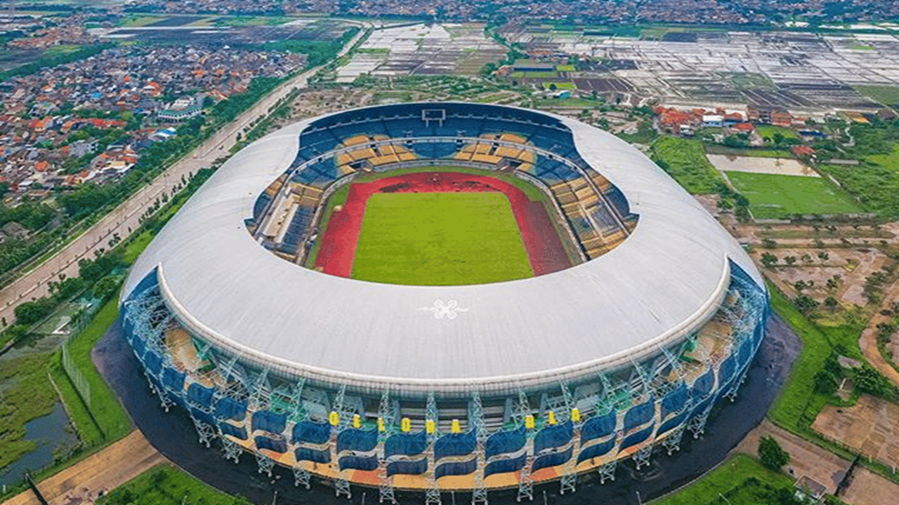

Tentang Klub
Nama Lengkap
Persatuan Sepak Bola Indonesia Bandung
Nama Panggilan
Pangeran Biru, Maung Bandung
Nama Pendek
PSB
Didirikan
5 Januari 1919 ; 106 tahun lalu , sebagai Bandoeng Inlandsche Voetbal Bond (BIVB) 14 Maret 1933 ; 91 tahun lalu , sebagai Persib.
Stadion
Gelora Bandung Lautan Api (Kapasitas 38.000).
SI Jalak Harupat (Kapasitas 27.000).
Pemilik
PT Persib Bandung Bermartabat
Presiden
Glenn Timothy Sugita
Manajer
H. Umuh Muchtar
Pelatih
Bojan Hodak
Asisten Pelatih
Igor Tolić
Persatuan Sepakbola Indonesia
Bandung, yang biasa disebut Persib,
adalah sebuah klub sepak bola
profesional Indonesia yang berbasis
di Bandung, Jawa Barat. Klub ini
berkompetisi di Liga 1, kasta teratas
sepak bola Indonesia. Didirikan pada
tahun 1919 sebagai Bandoeng
Inlandsche Voetbal Bond (BIVB), klub
ini secara resmi berubah menjadi nama
saat ini pada tahun 1933. Tim ini
juga dikenal dengan julukan Pangeran
Biru dan Maung Bandung.
Stadion kandang mereka adalah Gelora
Bandung Lautan Api, yang berkapasitas
38.000.
Klub ini telah memenangkan dua gelar
Liga 1, pada tahun 2014 dan 2023–24.
Sebelum format liga saat ini, Persib
memenangkan gelar Divisi Utama Liga
Indonesia 1994–95, dan lima gelar
Perserikatan, yang semuanya melalui
struktur turnamen. Persib juga
mencapai perempat final Kejuaraan
Klub Asia pada tahun 1995.
Persaingan utama tim dengan Persija
Jakarta disebut sebagai El Clàsico
Indonesia, yang merupakan salah satu
derby paling berbahaya dalam sejarah
sepak bola Indonesia.
Sejarah
Tahun berdirinya (1919–1940)
Akar Persib Bandung dapat ditelusuri
kembali ke Bandoeng Inlandsche
Voetbal Bond (BIVB) (bahasa Belanda
untuk 'Federasi Sepak Bola Domestik
Bandung'), dibentuk pada 5 Januari
1919 sesuai dengan temuan penelitian
menyeluruh yang dilakukan oleh para
sejarawan yang diumumkan pada tahun
2023. BIVB merupakan gabungan
klub-klub lokal di Bandung seperti
KBS, BB (Bintang Bandoeng), STER
(Steeds Trappen en Rennen), Diana
(Doe is alles niet achteruit),
Zwaluw, BIVC, BVC, KVC, VVC, Visser,
NVC, Brom dan Pasar Ketjil untuk
membentuk BIVB. Kemudian digantikan
oleh Persatuan Sepak Bola Indonesia
Bandung (PSIB) ('Persatuan Sepak Bola
Indonesia Bandung') dan tim-tim yang
berafiliasi dengan National Voetball
Bond (NVB). Pakaian-pakaian ini
bergabung pada 14 Maret 1933 untuk
membentuk Persib.
Persib memenangkan turnamen sepak
bola Hindia Belanda 1937 dan mencapai
final pada edisi 1933, 1934 dan 1936
sebelum kemerdekaan Indonesia tahun
1945.
Era Persatuan (1940–1994)
Setelah Indonesia merdeka, Persib
direformasi di Bandung pada tahun
1948, saat Revolusi Nasional
Indonesia. Pada tahun 1950-an, pemain
Persib Aang Witarsa dan Anas tampil
untuk tim nasional sepak bola
Indonesia.
Pada era Perserikatan, ketika klub
sepak bola Indonesia masih merupakan
klub amatir yang didanai oleh
pemerintah daerah, Persib memenangkan
gelar nasional kedua mereka pada
tahun 1961 dan berkompetisi di Piala
Emas Aga Khan tahun itu. Prestasi
penting klub berikutnya adalah
sebagai runner-up pada musim 1966.
Keberhasilan Persib menurun pada
tahun 1970-an yang berpuncak pada
degradasi mereka ke Divisi Pertama
pada musim 1978–79. Sebagai tanggapan,
klub mempekerjakan pelatih Polandia
Marek Janota untuk memimpin skuad
muda dan Risnandar Soendoro untuk
mengelola tim senior. Di bawah
bimbingan mereka, Persib memperoleh
promosi ke Divisi Utama, dengan
pemain termasuk Robby Darwis, Adeng
Hudaya, Adjat Sudrajat dan Suryamin.
Tim finis sebagai runner-up pada
musim 1982–83 dan 1984–85.
Klub ini menjuarai liga pada tahun
1986 dengan mengalahkan Perseman
Manokwari melalui gol Djadjang
Nurdjaman di Stadion Senayan. Mereka
kembali menjadi juara pada tahun 1990
dengan mengalahkan Persebaya Surabaya
2-0. Pemain era keemasan itu antara
lain Samai Setiadi, Ade Mulyono, Asep
Sumantri, dan Djadjang Nurdjaman yang
bakal menjadi satu-satunya peraih
gelar juara nasional Persib sebagai
pemain dan pelatih.
Persib menjadi juara pada musim
terakhir era Perserikatan sebelum
bergabung dengan liga Galatama yang
masih muda dan semi-profesional
menjadi Liga Indonesia Divisi Utama
dan karenanya berhak untuk memegang
Piala Presiden secara abadi.
Stadion
Gelora Bandung Lautan Api
Stadion Gelora Bandung Lautan Api adalah sebuah stadion sepak bola sekaligus markas utama persib bandung yang berlokasi di Kecamatan Gedebage, Kota Bandung, Jawa Barat. Stadion berada di antara ruas Jalan Tol Purbaleunyi km 149 dan Jalan Bypass Soekarno-Hatta Bandung. Akses jalan menuju Stadion akan dibuat pintu tol khusus di KM 149 ruas Tol Purbaleunyi dan ruas jalan dari arah Stasiun Cimekar dan dari jalan Rancanumpang. Dibuat juga ruas jalan baru menyusuri tol sekitar 2 kilometer, disamping ruas jalan yang sudah ada. Stadion ini juga menjadi salah satu kebanggaan warga Jawa Barat. Stadion ini awalnya dirancang pada tahun 2009 dengan anggaran sebesar Rp 278 Miliar.
Si Jalak Harupat

Stadion Si Jalak Harupat adalah sebuah stadion olahraga yang berada di Kabupaten Bandung, Jawa Barat. Nama stadion tersebut diambil dari julukan salah seorang pahlawan nasional dari Bojongsoang, Bandung, yaitu Otto Iskandardinata. Kini stadion tersebut menjadi milik Pemerintah Kabupaten Bandung. Persikab Bandung, yang merupakan wakil Kabupaten Bandung di Liga 2 Indonesia menjadikan stadion tersebut sebagai kandangnya. Begitu pula dengan tim se-daerah Bandung Persikab, Persib yang menjadikan stadion ini sebagai homebase sementara mereka di hingga Liga 1 Indonesia Musim 2019. Stadion ini dibangun mulai Januari 2003 pada saat Kabupaten Bandung dipimpin oleh bupati Obar Sobarna. Selanjutnya diresmikan pada hari jadi Kabupaten Bandung yang ke 364, tanggal 26 April 2005 oleh Agum Gumelar yang menjabat sebagai Ketua Umum Komite Olahraga Nasional Indonesia Pusat.